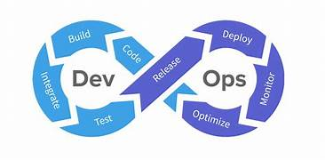

1.Web Development
Web development refers to the creating, building, and maintaining of websites. It includes aspects such as web design, web publishing, web programming, and database management. |
2.Mobile App Development
The process of developing software applications for mobile platforms, such as smartphones, tablets, or digital assistants, is referred to as mobile app development. |
3.UI/UX Design:
UUI/UX design refers to the process of enhancing user interactions with digital products to make them visually appealing and highly functional. UI, or User Interface, focuses on designing the visual elements such as layouts, buttons, colors |
4.API Development:
WAPI development involves creating Application Programming Interfaces that allow different software systems or components to communicate with one another. It focuses on designing, building, and deploying secure, efficient. |

5.AI and Automation:
AI and automation are revolutionizing industries by streamlining processes, enhancing efficiency, and reducing human effort in repetitive tasks. Artificial Intelligence (AI) enables machines to mimic human intelligence. |

6.Cloud and Devops:
Cloud and DevOps are two transformative technologies that work together to enhance software development and deployment processes. Cloud computing provides scalable, on-demand resources such as storage, servers, and networking. |